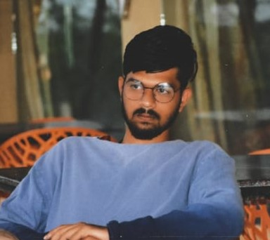

Summary

To utilize my knowledge of networking technologies and to secure a network engineer position with an organisation that values hard work and dedication for the company growth.
Education
- B.E/Btech(2019-2023)---Cambridge Institute of Technology--E.C.E----70.19%
- Intermediate(2017-2019)--Narayana Junior College---M.PC-----88%
- 10th Class(2016-2017)----Sri Saraswaathi Vidhya Mandhir--88%
Work Experince
- Network Engineer: Working as a Network engineer in ERICSSON from past 8 month
SKILLS
- A+
- N+
- CCNA
- Web Development
Contact